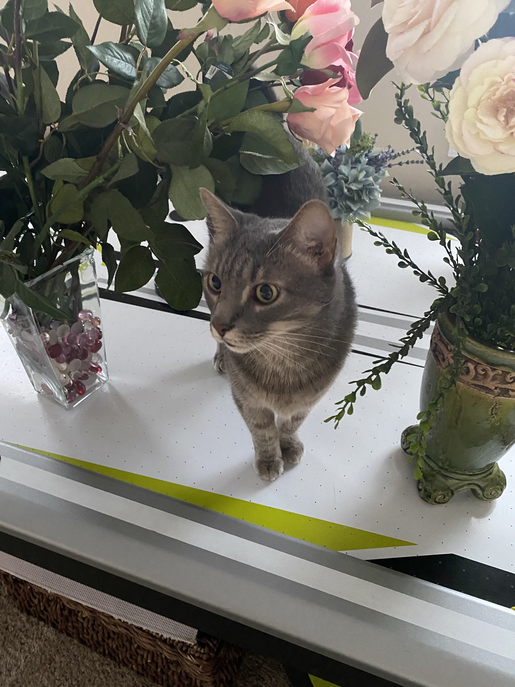

About Me

Obviously, this is not a picture of me, but a picture of my cat Drive-Thru.
When I'm not working on school or at work, I enjoy hanging with this little guy.
I also enjoy playing online chess or fiddling around on a keyboard (musical and computer).
I'm currently working on a Data Science & Programming Support Services (AAS) degree at
Wake Tech, and I also will be taking various math classes at Forsyth Tech. Why so many classes?
My goal is to get a master's degree in computer science after I finish at Wake Tech,
so I'm attempting to complete all the prerequisite courses by that time.